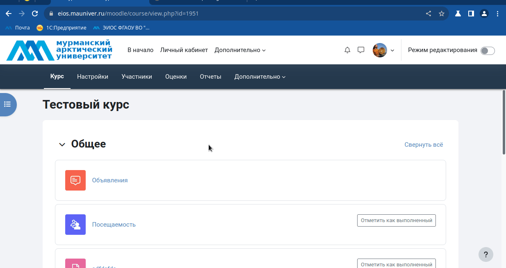
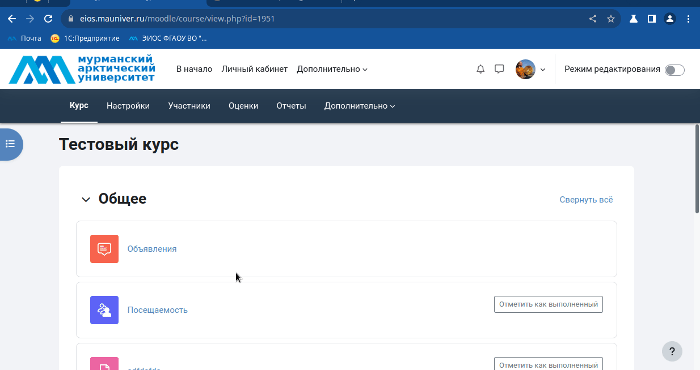
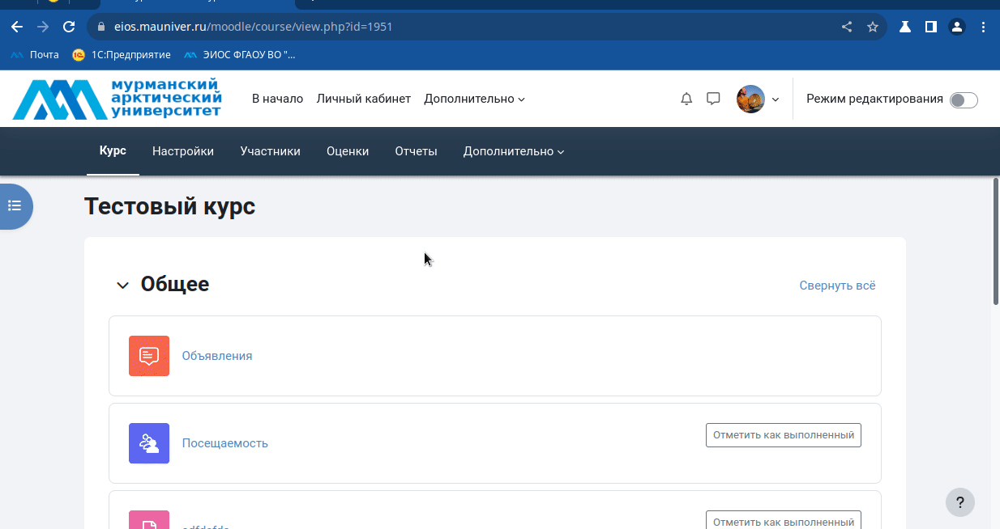

Запись студентов на курс
Для того, чтобы студенты могли получить доступ к заданиям курса конкретного преподавателя необходимо сначала студентов записать на курс. В
СУО ЭИОС университета используется 3 механизма записи студентов на курс преподавателя:
- синхронизация с глобальной группой;
- добавление студентов на курс с помощью кодового слова;
- индивидуальное добавление студентов на курс.
1. Индивидуальное добавление студентов на курс
- Перейдите в раздел Участники вашего курса.
- Активируйте добавление студента на курс кнопкой Зачисление пользователей на курс.
- Начните писать в поле Выберите пользователей фамилию студента и система автоматически вам будет подставлять найденные значения
- выберите студента/студентов, щелкнув основной кнопкой мыши по элементу списка
- добавьте студента/студентов кнопкой Зачислить выбранных пользователей и глобальные группы.

2. Добавление студентов на курс с помощью кодового слова
- Перейдите в раздел Участники вашего курса.
- Убедитесь, что в списке способов зачисления на курс есть активный способ Самостоятельная запись (Студент) (пиктограмма глаза не должна быть перечеркнутой)
Если этого пункта нет, то его можно добавить по аналогии с синхронизацией с глобальной группой (см. выше)
- Откройте окно настроек способ зачисления на курс Самостоятельная запись (Студент) щелкнув по шелкнув по пиктограмме шестеренки
- Активируйте режим использования кодовых слов для групп, выбрав в пункте Использовать кодовые слова для групп значение Да и сохраните изменения кнопкой Сохранить внизу страницы.
- В раскрывающемся списке Зачисленные на курс пользователи выберите элемент списка Группы.
- Активируйте создание группы кнопкой Создать группу.
- Укажите в поле Название группы удобное для вас название группы.
- Введите в поле Кодовое слово любое слово, которое студенты смогут использовать для самозаписи на ваш курс.
- Завершите создание группы кнопкой Сохранить.
- Сообщите студентам установленное вами кодовое слово на своих с ними занятиях.
- После этого студенты при доступе к курсу смогут в ответ на запрос системы вписать кодовое слово и записаться на ваш курс.

3. Синхронизация с глобальной группой:
- Перейдите в раздел Участники вашего курса.
- В раскрывающемся списке Зачисленные на курс пользователи выберите элемент списка Способы зачисления на курс.
- В списке Добавить способ выберите Синхронизация с глобальной группой.
- В списке Глобальная группа найдите шифр необходимой вам группы.
- Завершите добавление нажатием кнопки Добавить способ.
